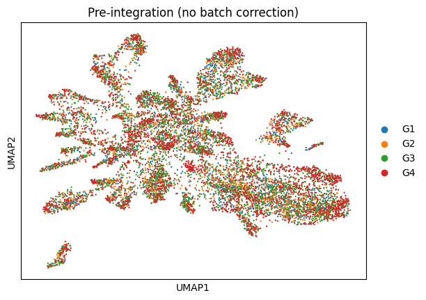
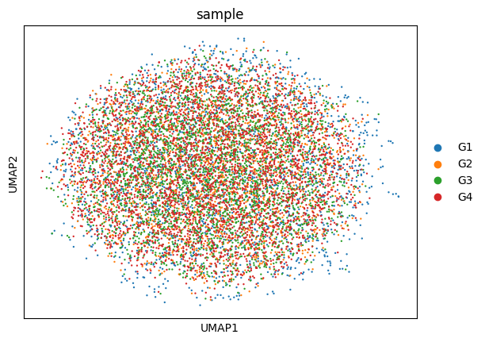
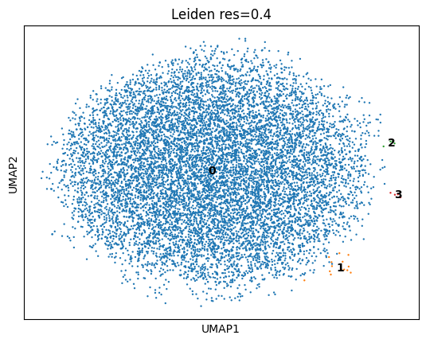
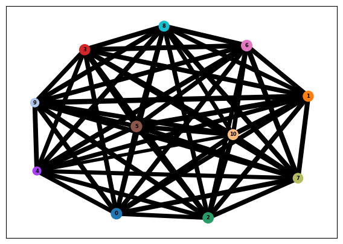
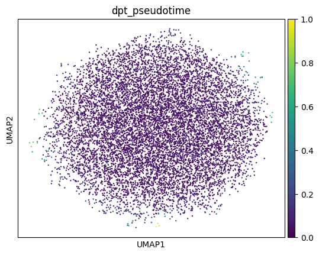
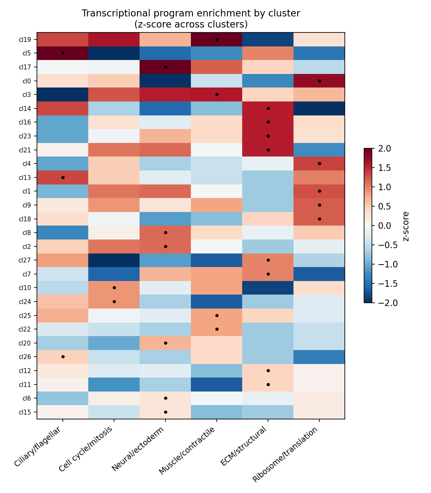
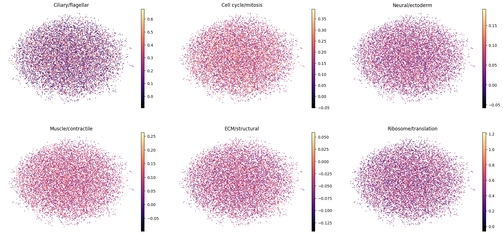

A Single-Cell Transcriptomic Reference of the Geoduck (Panopea generosa) Gastrula
A short non-peer-reviewed scientific report
This report is a Roberts Lab working manuscript. It has not been peer reviewed.
It is shared to make small scientific efforts, preliminary analyses, technical observations, and exploratory work openly available.
1 Background and Summary
The Pacific geoduck (Panopea generosa) is a long-lived, economically important burrowing clam and a growing focus of aquaculture in the Pacific Northwest. Despite a published genome assembly and annotation, no single-cell transcriptomic data have been available for the species, leaving the cellular composition of its development uncharacterized.
Here we describe a single-cell RNA-sequencing (scRNA-seq) dataset of geoduck gastrula-stage embryos: four separate 10x Genomics libraries (biological replicates of a single developmental stage), processed with Cell Ranger against the P. generosa genome. After uniform quality control and batch integration, the dataset comprises 10,481 high-quality cells profiled across a shared 34,947-gene reference.
The cells form a continuous transcriptional landscape rather than discrete, well-separated cell-type clusters, and no single-stage developmental trajectory is recoverable — the expected signature of a gastrula in which lineage specification is underway but incomplete. Importantly, the continuum is not featureless: once genes are functionally annotated, clusters along it show clear, biologically coherent enrichment for the major embryonic lineage programs — ciliary/flagellar, neural/ectoderm, muscle/contractile, extracellular-matrix (ECM)/structural, cell-cycle, and biosynthetic (ribosomal). Individual cells co-express these programs (graded, not committed), while the cluster-level program structure is strong and interpretable.
To our knowledge this is the first single-cell transcriptomic reference for geoduck. We release it as a resource — raw matrices, an integrated and annotated AnnData object, candidate cell-state marker tables, and interactive Loupe browser files — to support comparative molluscan development and aquaculture genomics. The principal limitations (modest sequencing depth and a single stage) are stated openly and motivate the candidate, signature-based framing of the cell states.
2 Methods
2.1 Sample design and sequencing
Four libraries (G1–G4) were prepared from dissociated cells of geoduck gastrula-stage embryos as biological replicates of a single stage (not a developmental time series). Libraries were sequenced and processed with 10x Genomics Cell Ranger count (Zheng et al. 2017) against the P. generosa genome (Geoduck_mkref_genome reference; 34,947 gene models, PGEN_* identifiers) with --include-introns to capture pre-mRNA reads, appropriate for a non-model invertebrate with a sparse annotation.
Sequencing depth differed substantially between replicates: G3 and G4 received roughly 2–3× the reads of G1 and G2 (Number of Reads 43.4–135.5 M; mean reads/cell 15,332–39,226), which is accounted for in QC below.
2.2 Quality control and integration
Filtered feature–barcode matrices from all four samples were merged into a single object with sample-prefixed barcodes. To remove a depth-driven low-count tail present only in the shallower samples (G1/G2), uniform thresholds were applied across all replicates: ≥250 genes/cell, ≥500 UMI/cell, and genes detected in ≥3 cells. This retained 10,481 of 12,305 cells (85.2%) and 19,324 genes; removed cells came almost entirely from G1 (31%) and G2 (33%), equalizing the per-replicate quality floor.
Counts were normalized (counts-per-10,000, log1p), and 2,000 batch-aware highly-variable genes were selected. After scaling and PCA (50 components), replicate batch effects were removed with Harmony (Korsunsky et al. 2019) over the sample variable. Because G1–G4 are biological replicates, integrating over sample is the appropriate choice. A neighbor graph and UMAP were computed on the Harmony-corrected space, and Leiden clustering (Traag et al. 2019) was run across resolutions 0.1–1.0. Analyses used Scanpy (Wolf et al. 2018).
2.3 Trajectory analysis
Developmental-continuum structure was tested with PAGA (Wolf et al. 2019) and diffusion pseudotime on the integrated object (after removing 23 G1-specific outlier cells).
2.4 Functional and cell-state annotation
PGEN gene identifiers were joined to the P. generosa gene-annotation mapping table (UniProt accession, gene symbol, description, GO IDs; 20220419-pgen-gene-accessions-gene_id-gene_name-gene_description-alt_gene_description-go_ids.tab). Per-cluster markers were computed with a Wilcoxon rank-sum test and annotated with this table. Six curated lineage-program gene sets (ciliary/flagellar, cell cycle/mitosis, neural/ectoderm, muscle/contractile, ECM/structural, ribosome/translation; 207–526 genes each) were assembled from gene descriptions/symbols/GO terms and scored per cell with scanpy.tl.score_genes. Program scores were averaged per cluster and z-scored across clusters.
3 Data Records
The release comprises processed single-cell objects, annotation tables, and figures. Counts in .X are raw integers; a log-normalized matrix is stored in .raw, and raw counts are also retained in .layers['counts'].
| File | Contents |
|---|---|
geoduck_merged_filtered.h5ad |
Raw merged matrix, 12,305 cells × 34,947 genes, sample labels |
geoduck_integrated.h5ad |
QC’d (10,481 cells), Harmony-integrated; leiden_* res 0.1–1.0; functional annotation in .var; program scores and top_program in .obs |
geoduck_trajectory.h5ad |
10,458 cells (G1 outliers removed); PAGA, diffusion pseudotime, diffmap |
cluster_markers_annotated.csv |
Top-15 markers per cluster with symbol, description, log-fold-change, adjusted p-value |
program_scores_by_cluster.csv |
Mean lineage-program score per cluster |
Per-sample Cell Ranger outs/ |
Filtered/raw matrices, BAMs, metrics_summary.csv, web_summary.html, cloupe.cloupe |
4 Technical Validation
4.1 Library quality and consistency
All four libraries align to the same reference and share nearly identical top-expressed genes, indicating consistent chemistry with no per-sample technical artifact dominating. The most abundant gene accounts for only ~0.75% of UMIs in every sample (no rRNA/mitochondrial contamination). Mapping rates were modest across samples (~42% confidently to genome, ~23% to transcriptome) — typical for a non-model invertebrate with an imperfect annotation.
| Sample | Cells | Median UMI/cell | Median genes/cell | Total reads | Genes detected |
|---|---|---|---|---|---|
| G1 | 2,912 | 724 | 551 | 48.1 M | 18,050 |
| G2 | 2,832 | 714 | 547 | 43.4 M | 17,738 |
| G3 | 3,107 | 1,467 | 953 | 103.1 M | 20,063 |
| G4 | 3,454 | 1,649 | 1,038 | 135.5 M | 21,004 |
4.2 Integration removes the depth confound
Before integration, replicate centroids showed an ordered drift in PCA space (G1≈G2 → G3 → G4) tracking the G1/G2-versus-G3/G4 sequencing-depth difference. Since the libraries are replicates, this is a nuisance rather than biology; Harmony removed it, and the integrated UMAP shows the four replicates thoroughly intermixed (Figure 2).


4.3 A continuous landscape, not discrete cell types
Leiden clustering across resolutions does not yield robustly separable clusters: below resolution 0.4 all cells collapse to a single cluster, and at resolution ≥0.6 the silhouette score on the integrated space is negative — clusters partition a continuum rather than separating discrete islands. At resolution 0.4 the dominant cluster holds 10,458 of 10,481 cells (99.8%); the only structure that splits off is three tiny G1-specific outlier specks (4, 5, and 14 cells), which were removed from downstream analysis (Figure 3).

4.4 No single-stage trajectory
PAGA and diffusion pseudotime independently indicate no trajectory: the diffusion spectrum is flat (no spectral gap after the trivial first eigenvalue), the PAGA graph is a fully-connected mesh (all 55 cluster pairs strongly connected; median connectivity 0.74), and pseudotime shows no gradient and is flat across replicates (Figure 4, Figure 5). This is expected: trajectory inference requires cells spanning developmental time, which a single stage does not provide.


4.5 Nascent lineage programs along the continuum
Functional annotation covered 11,549 of 19,324 expressed genes (59.8%). Top cluster markers include recognizable, conserved cell-state genes — ciliary/IFT genes (cfap36, Ift88, KIF3A, axonemal dynein assembly factors), neural/ectoderm transcription factors (sox3, TFAP2A), and cell-cycle genes (cyclin-B, Cdt1, Aurka, ttk).
Scoring the six curated lineage programs shows that clusters are strongly distinguished by program (per-program enrichment spread 3.4–4.9 z-units across clusters; Figure 6), even though the programs are spatially diffuse on the UMAP (Figure 7). Per-cell specialization is weak (median top1–top2 program-score margin = 0.58 z), i.e. individual cells co-express multiple programs.
| Program | Genes | Strongly enriched clusters |
|---|---|---|
| Ciliary/flagellar | 526 | 5, 13, 26 |
| Cell cycle/mitosis | 494 | 10, 24 |
| Neural/ectoderm | 429 | 2, 8, 17, 20 |
| Muscle/contractile | 254 | 3, 19, 22, 25 |
| ECM/structural | 270 | 11, 12, 14, 16, 21, 23 |
| Ribosome/translation | 207 | 0, 1, 4, 9, 18 |


Together these results indicate that the major embryonic lineage programs are already detectable and cluster-organized at the gastrula stage, but not yet resolved into discrete, committed cell-type territories — the expected hallmark of mid-gastrulation.
5 Usage Notes
Program- and cluster-level assignments are candidate, signature-based identities and warrant orthogonal validation (e.g. whole-mount HCR/in situ hybridization of representative ciliary, neural, and muscle markers). Two characteristics should guide reuse: (i) the dataset is a single developmental stage, so it cannot support developmental-trajectory reconstruction on its own; and (ii) sequencing depth is modest (median ~550–1,650 UMI/cell), which limits resolution of fine sub-states. Deeper sequencing and additional stages would address these directly. The annotated geoduck_integrated.h5ad is the recommended entry point; the Loupe (cloupe.cloupe) files allow interactive browsing without a Python/R environment.
6 Suggested citation
Roberts, S. B. 2026. A Single-Cell Transcriptomic Reference of the Geoduck (Panopea generosa) Gastrula. Current Findings. Available at: https://robertslab.github.io/current-findings/reports/geoduck-gastrula-scrnaseq/
7 Version history
| Version | Date | Notes |
|---|---|---|
| 0.1 | 2026-06-17 | Drafted from REPORT.md analysis report |